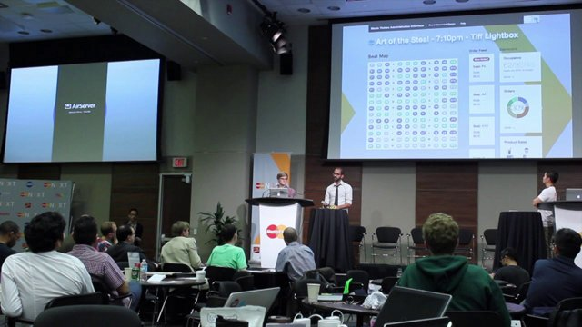
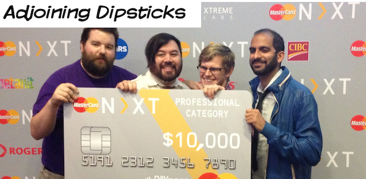

Kraplow!
Snack Tracker

Deck of cards

Boggle Clone

Tetris Clone

Jacks or Better Video Poker Clone

Christopher Gordon Carr's Software Developer Portfolio
I have created all of this software. It is free to download and modify. I appreciate all suggestions. I am always open to requests for projects or modifications of my code.
Blog: http://christophergordoncarr.wordpress.com
Twitter: https://twitter.com/moonscientist
Linkedin: http://ca.linkedin.com/pub/christopher-carr/24/a79/220
Github: http://github.com/ccarrster
Kraplow! |
I created Text Kraplow! as an experiment to see if I can get all the rules of a western card game into software. Kraplow! Uses HTML and AJAX. |
Snack Tracker
|
Created an IOU management system for the office store I ran at Well.ca/Tulip. Create your own free IOU store today! |
Deck of cards
|
I want to design a very fast way to put board games on the web. My goal is a minimalistic no rules interface. At the moment it is a deck of cards. Double click to flip cards. Drag to move cards. Drag select to select multiple cards. Icons to shuffle, stack and flip selected cards. Refresh the page for a new deck. My plan is to add private and public areas(You can only see your poker hand), rolling dice(likely double click to roll). To create a new game, you would need pictures of the front and back of game elements and an inital layout. Shared checkers shares the locations of the pieces to all browsers visiting the page, and updates every second. |
Boggle Clone
|
I created Bungle to demonstrate a simple internet game that doesn't required Java or downloading anything. |
Tetris Clone
|
I created Stacking Blocks because a "How to become a game developer" recomended it as a good start. |
Jacks or Better Video Poker Clone
|
I created Video Poker as a chalange to myself to start on the way to online multiplayer games, specifially a western card game. |
|
  Movie Tickles - MasterCard |
Mastercard NXT hackathon - Winning Professional team, $10,000 professional prize. I worked on the API and the integration with the MasterCard Payment API. Choose which seats you want, QR Code ticket, order popcorn from your seat. |
Kutafuta
|
Sortable Data hackathon - Kijiji Abratrage. Compare wanted an offering listings side by side. Won 2nd place and a Nexus 7. |
Squalid Salad - CODE 2014
|
CODE 2014 hackathon - Top 15 of over 100 submissions. Government sposored Canada wide coding challege. I did this hackathon solo over 48 hours. I got to present at the finals in Toronto. This app uses the governments open api data from children's hospitals and combines it with saftey data. |
| PCH Hardware Hackathon KW - Honorable mention. Alert you when your phone, wallet goes into your washing machine. | |
| Hack the Orchestra - Honorable mention. Simulate sound echoing off your home and back to the center in the square. | |
| CODE 2015 Hackathon submissions. Helping you choose a career and find a school. | |
Amazing Labyrinth Clone
|
Facebook Hackathon - Labyrinth as an experiment in path finding. I created a Facebook version during Facebook Hack Toronto 2012. |
|
BASICS web report |
Ongoing contract work to make a daily generated xml report available on a secured web page in a searchable/filterable state. Authentication, Download custom csv, Search, Multi-field search, conversion/importing. Technoligies: PHP, MySql, jQuery, Bootstrap, JavaScript, CSS, HTML |

|
Integrated existing scheduling system with web site. Created custom schedule calendar. Duration: 3 1/2 hours. Technologies: JavaScript, jQuery, CSS, HTML |

|
Victoria Motorcycle Salvage Created web pages for searching inventory via an existing Access parts database. Included images and links to email part requests. Set up local web server. Duration: 13 hours. Technologies: JavaScript, HTML, Access |